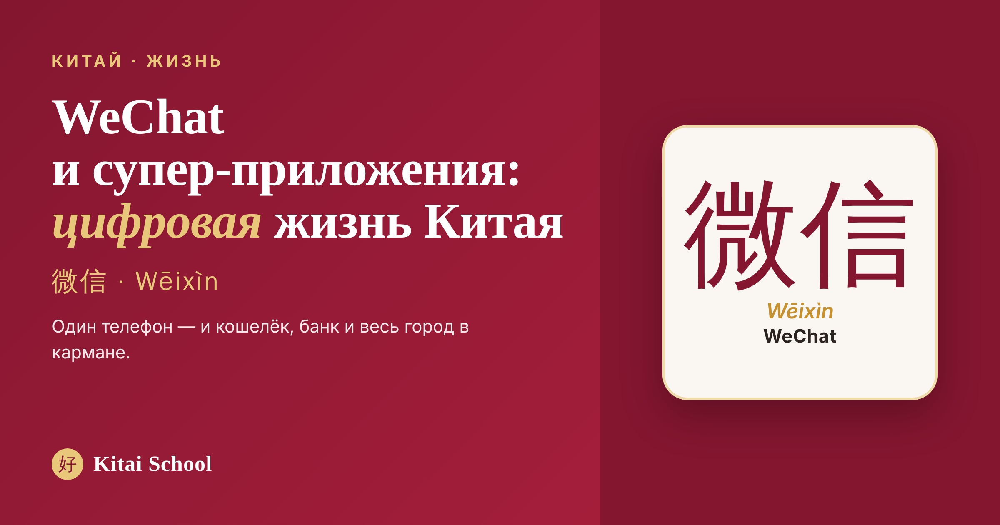
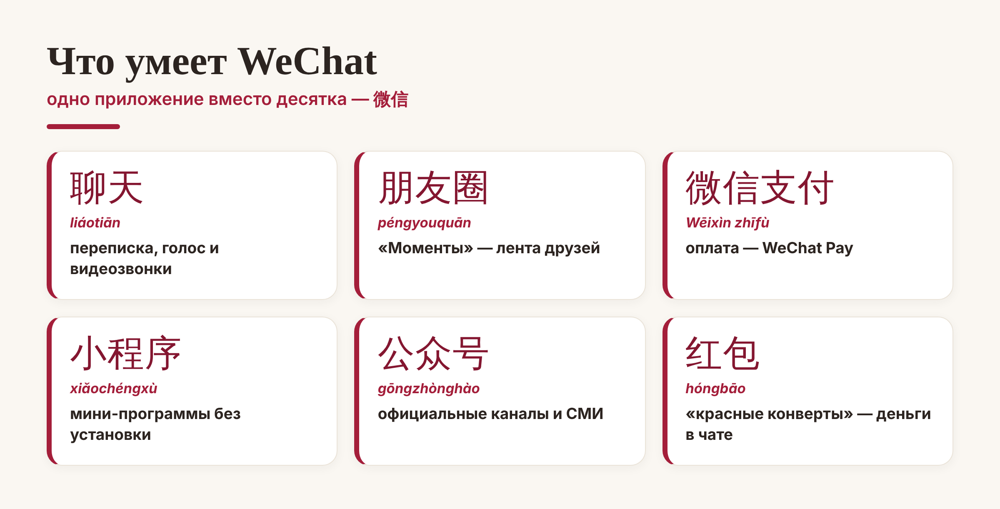
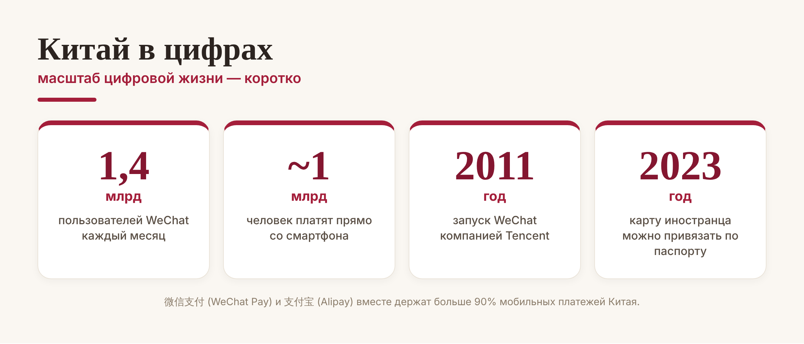
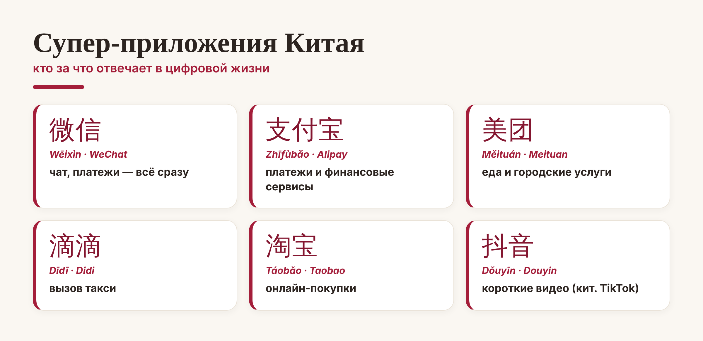

Китай · жизнь

Когда я жила в Китае, то поймала себя на мысли: телефон там заменяет кошелёк, ключи, банк и половину государственных услуг — и всё это умещается в одном приложении. Имя ему WeChat, по-китайски 微信 (Wēixìn). Это не просто мессенджер, а супер-приложение: через него китайцы переписываются, платят, заказывают еду, вызывают такси и ходят к врачу.
Давайте разберёмся, что такое супер-приложение, что именно умеет WeChat и почему без него в современном Китае буквально не прожить.
Супер-приложение (по-китайски 超级应用, chāojí yìngyòng) — это приложение, которое объединяет в себе мессенджер, платежи и десятки мини-сервисов сразу. Вместо того чтобы ставить отдельные приложения для чата, банка, доставки и такси, вы делаете всё это в одном окне.
Главный пример такого супер-приложения в мире — как раз 微信. Запустила его в 2011 году компания Tencent (腾讯), и сегодня у него более 1,4 миллиарда активных пользователей в месяц — то есть им пользуется практически весь Китай. По сути, это отдельная цифровая вселенная, в которой проходит целый день.
Если открыть WeChat, окажется, что «переписка» — лишь малая часть. Вот что ещё прячется внутри:

Две вещи стоит запомнить особо. Первая — 小程序 (xiǎochéngxù), «мини-программы»: это маленькие приложения внутри WeChat, которые не нужно отдельно устанавливать — магазин, музей, кофейня просто открываются по ссылке. Вторая — 红包 (hóngbāo), «красный конверт»: традиционный денежный подарок, который теперь отправляют прямо в чате, особенно на Новый год.
Отдельного разговора заслуживают деньги. В Китае почти исчезли наличные — вместо них везде 二维码 (èrwéimǎ), QR-код. От ресторана до бабушки с овощами на рынке: наводишь камеру, подтверждаешь — и всё.

Почти весь этот безналичный поток держат два гиганта: 微信支付 (Wēixìn zhīfù, WeChat Pay) и 支付宝 (Zhīfùbǎo, Alipay) — вместе они занимают больше 90% рынка мобильных платежей. Платить со смартфона в Китае привычнее, чем доставать кошелёк: так делает почти миллиард человек.
WeChat — король, но не одинок. Цифровую жизнь Китая делят ещё несколько супер-приложений, у каждого своя роль:

Например, 美团 (Měituán) — это еда и городские услуги, 滴滴 (Dīdī) — такси, 淘宝 (Táobǎo) — бесконечный онлайн-рынок, а 抖音 (Dǒuyīn) — китайский «родитель» TikTok. Все вместе они и складываются в ту самую цифровую жизнь, где смартфон решает всё.
Хорошая новость: раньше иностранцу без китайского банка и телефона было тяжело, но с 2023 года всё проще. Теперь к WeChat Pay и Alipay можно привязать обычную зарубежную карту (Visa, Mastercard) — достаточно паспорта, без местного счёта и номера.
Совет перед поездкой. Установите WeChat и Alipay заранее, привяжите карту и выучите пару слов: 扫码 (sǎomǎ) — «сканировать код», 支付 (zhīfù) — «оплатить». С ними вы будете чувствовать себя в цифровом Китае как дома.
Вот так и устроена цифровая жизнь в Китае: одно-два супер-приложения — и у вас в кармане и кошелёк, и банк, и весь город. А понимание пары китайских слов превращает эту магию из загадки в удобный инструмент.
До встречи в цифровом Китае! 扫一扫，很方便。